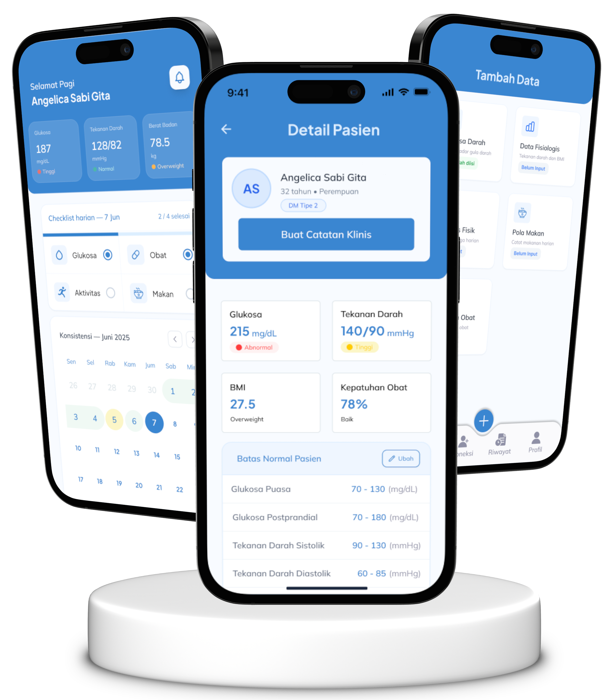
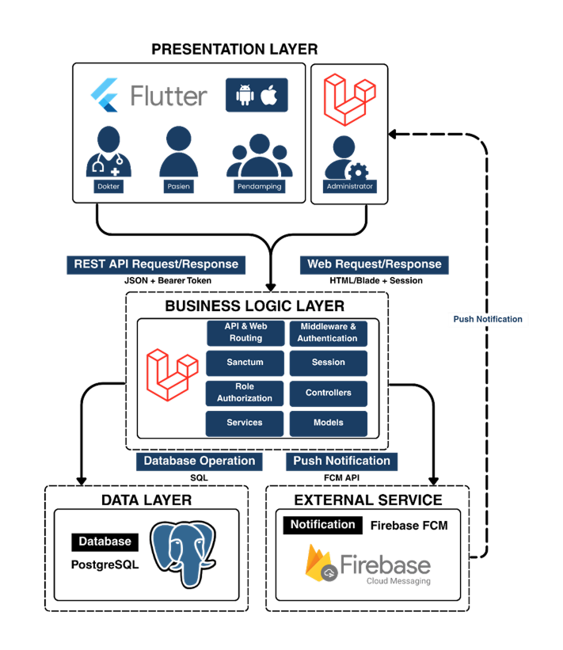

DIABETAKU
Smartphone-based diabetes monitoring application built for doctors, patients, and families.

- 04
- User RolesDoctor, Patient, Family, Admin
- 97
- Use CaseContinuous Integration
- Android & iOS
- Target PlatformFlutter Mobile Deployment
- Full
- Scope of WorkEnd-to-End Engineering & API
Challenge
The Problem
Diabetes monitoring involves multiple disconnected types of information and divergent user stakeholders. Patients often record inconsistent logs on paper or isolated apps, doctors lack consolidated longitudinal trends during consultations, and worried families are left unaware during emergency hypo/hyperglycemic fluctuations.
Goal: Unify fragmented diabetic data into an authoritative, synchronized multi stakeholder health platform.
Solution
The Approach
DiabeTaku was engineered as a centralized digital ecosystem combining an ultra-responsive Flutter cross-platform mobile client with an enterprise-grade Laravel REST API and a robust PostgreSQL relational database. Dynamic access control segregates granular views specifically tailored for Doctor, Patient, Family, and Admin actors.
Outcome: Real-time telemetry, rapid medical intervention alerts, and high-integrity medical history auditing.
System Architecture

What I Built
-
01
Flutter Development
Mobile client implementationBuilt the mobile interface and complete client navigation hierarchy. Developed modular widget components, state listeners, and dynamic graphical visualizers for real-time glycemic data plotting.
-
02
REST API Integration
Networking & serializationSeamlessly connected the Flutter application with the Laravel REST API backend. Implemented asynchronous network requests, automated token refreshment cycles, request error handling, and offline write queues.
-
03
Role-Based Access
Authentication architectureEngineered user authorization flows across 4 roles: Doctor, Patient, Family, and Admin. Configured JWT claims and guard policies preventing unauthorized data exposure across patient boundary records.
-
04
UI / UX Architecture
Human-centered designSynthesized complex clinical requirements into intuitive user flows, high-contrast accessible layouts suitable for elderly diabetic patients, and interactive Figma prototypes prior to production coding.
Process
- 01
Research
Understand users, clinical standards, and strict health information requirements.
- 02
Define
Clarify product structure, database entity relations, and API endpoint contracts.
- 03
Design
Map end-to-end user flows, low-friction input modes, and high-fidelity interface prototypes.
- 04
Build
Develop the Flutter mobile application, construct Laravel services, and integrate REST APIs.
- 05
Test
Validate user permissions, test network edge-cases, inspect latency, and refine UI ergonomics.